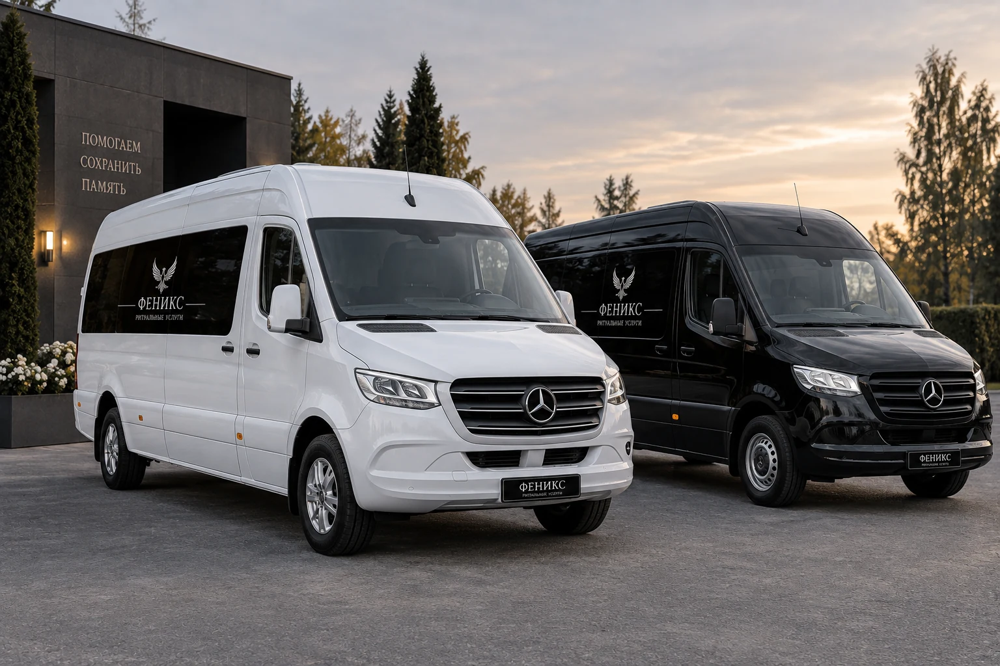
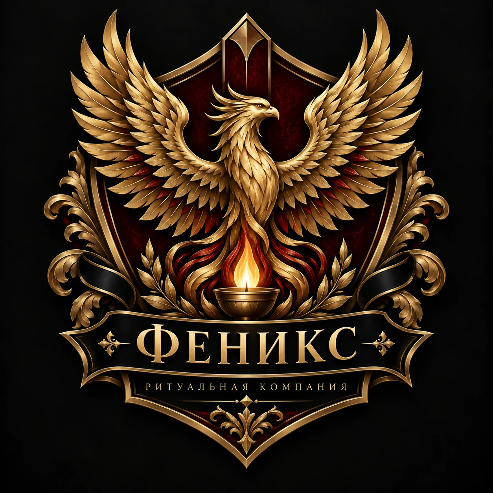
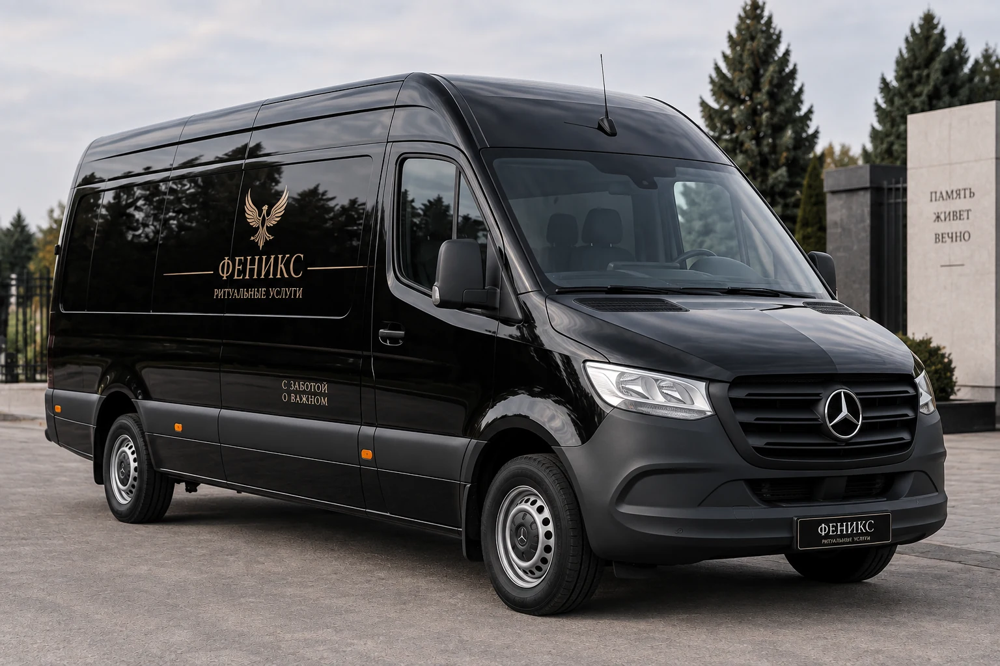
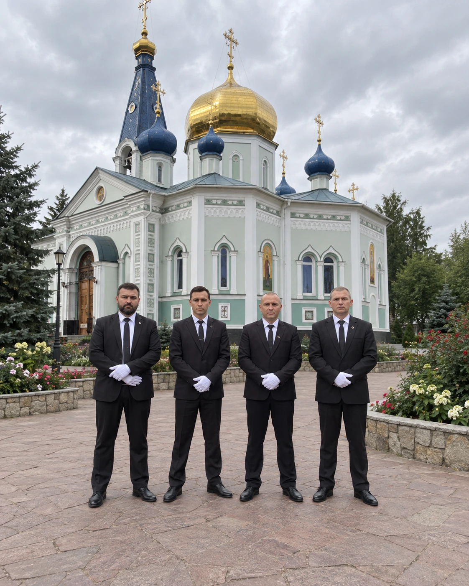

Достойно. Спокойно. С заботой.
Берём на себя организационные вопросы, когда семье особенно важно сохранить силы. Похороны, кремация, груз 200, транспорт, документы и благоустройство мест захоронения.
Ритуальные услуги
в одном месте
Не заставляем семью координировать десятки исполнителей. Вы получаете понятный план действий и одного ответственного специалиста.
Кремация
Организуем кремацию, транспорт, оформление и сопровождение.
Подробнее →02Похороны
Организация церемонии от первого звонка до захоронения.
Подробнее →03Ритуальный транспорт
Катафальный и сопровождающий транспорт для церемонии.
Подробнее →04Груз 200
Отправка и встреча, транспортировка по России и всему миру.
Подробнее →05Дезинфекция
Профессиональная санитарная обработка помещений после умерших.
Подробнее →06Поминальные обеды
Помогаем подобрать формат и организовать поминальную трапезу.
Подробнее →07Благоустройство
Уход, оформление и благоустройство мест захоронения.
Подробнее →08Оформление документов
Сопровождаем обязательные документы и организационные вопросы.
Подробнее →
Организация по понятному плану
Мы выстраиваем процесс по шагам: от первого звонка и оформления документов до транспорта, церемонии и места захоронения.
Отправка и встреча. Россия и весь мир.
Помогаем организовать перевозку умершего между городами и странами: документы, подготовка, транспорт, координация отправки и встречи.
Понятный порядок действий
Мы берём организацию на себя, а ключевые решения остаются за семьёй.
Звонок
Уточняем ситуацию и рассказываем, что действительно нужно сделать сейчас.
План
Согласуем формат церемонии, услуги, транспорт и необходимые документы.
Организация
Координируем исполнителей, маршруты и все этапы в назначенное время.
Сопровождение
Остаёмся на связи до завершения церемонии и последующих вопросов.
Сдержанность в деталях.
Уважение в каждом действии.
Транспорт и бригада выглядят единообразно и аккуратно — без лишней демонстративности.


Ритуальные товары
в едином стиле
Подберём крест, принадлежности и другие позиции под формат церемонии и бюджет. Без перегруженных витрин — только уместные варианты.

Нужна помощь прямо сейчас?
Позвоните в «Феникс». Мы спокойно объясним порядок действий и поможем организовать всё необходимое в Челябинске. При необходимости бесплатно окажем профессиональную психологическую поддержку в период утраты.